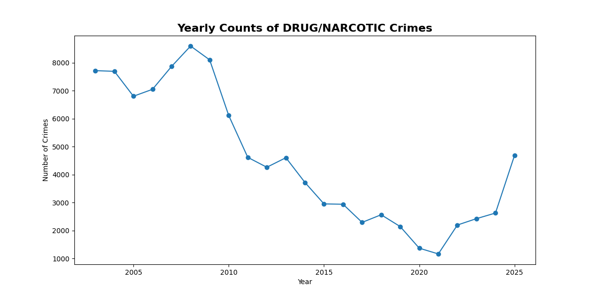

Drug-related crime has been a central issue in California politics. But how much of what we see in the data reflects policy — and how much reflects deeper structural change?
We begin by looking at how drug-related crimes have changed over the past two decades. This gives us a baseline for understanding whether major shifts align with policy changes.

There is a noticeable drop between 2009 and 2011, followed by a gradual rise after 2021 and a spike around 2025. These shifts coincide with major policy moments, including sentencing reforms and more recent enforcement efforts.
While we cannot claim direct causation, the timing suggests that policy may play a role in shaping observed crime trends.
But overall trends don’t tell us where crime happens. To understand that, we need to look at geography.
The map below shows how the spatial distribution of drug-related crime has changed over time. Compare earlier years with recent ones to see how patterns evolve.
Over time, drug crime becomes more concentrated in specific districts — particularly the Tenderloin, Southern, and Mission areas. What was once more distributed across the city is now increasingly localized.
By 2025, these areas account for a significantly larger share of total drug-related incidents, suggesting a growing spatial concentration.
Is this concentration unique to drug crime, or part of a broader trend across all crime types?
To answer this, we compare drug crime with other high-frequency crimes such as larceny/theft.
Unlike drug-related offenses, other crimes remain relatively stable in their geographic distribution over time. The same districts dominate both in 2003 and 2025 with only minor changes.
This suggests that the increasing concentration observed earlier is not a general crime trend — but something specific to drug-related activity.
Drug crime in San Francisco has not only changed in scale but also in structure. While trends over time may align with policy shifts, the growing concentration in specific areas points to deeper dynamics.
Unlike other crime types, drug-related offenses are becoming increasingly localized — raising new questions about enforcement, policy, and urban conditions.